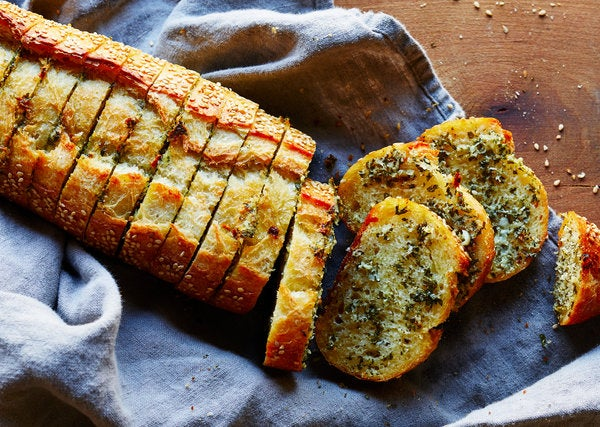

Garlic Bread

½ cup/8 tablespoons unsalted butter (1 stick)
4 garlic cloves, grated
½ cup Parmesan, grated
¼ cup firmly packed chopped flat-leaf parsley
¼ teaspoon kosher salt and black pepper
1 baguette or rustic crusty loaf
- Heat the oven to 400 degrees. In a small bowl, stir together the butter, garlic, Parmesan and parsley.
Add the salt and generously season with pepper.
- Cut deep slits into the baguette, 1-inch apart — don't cut all the way through the loaf — and place the baguette on a large piece of foil.
Using a teaspoon or an offset spatula, generously spread the seasoned butter inside each slit.
- Wrap the baguette in the foil, place on a baking sheet and bake for 15 minutes. Remove the baguette from the oven and unwrap the top.